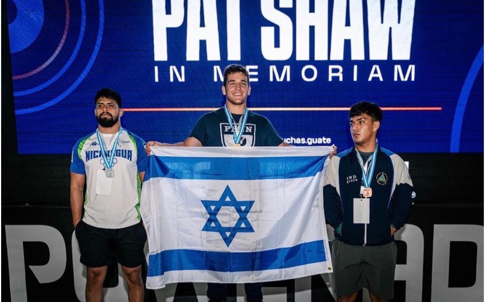
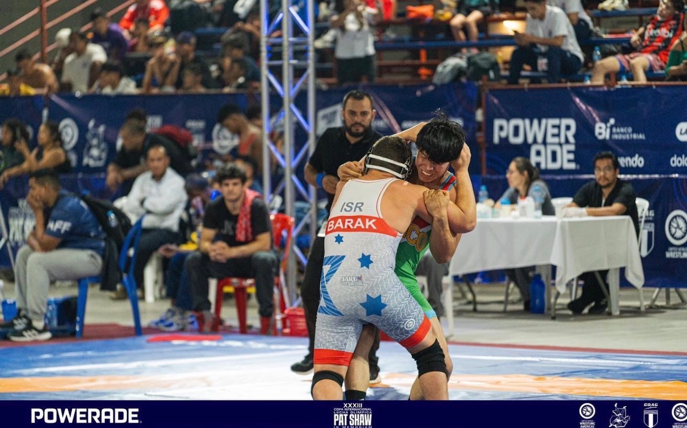
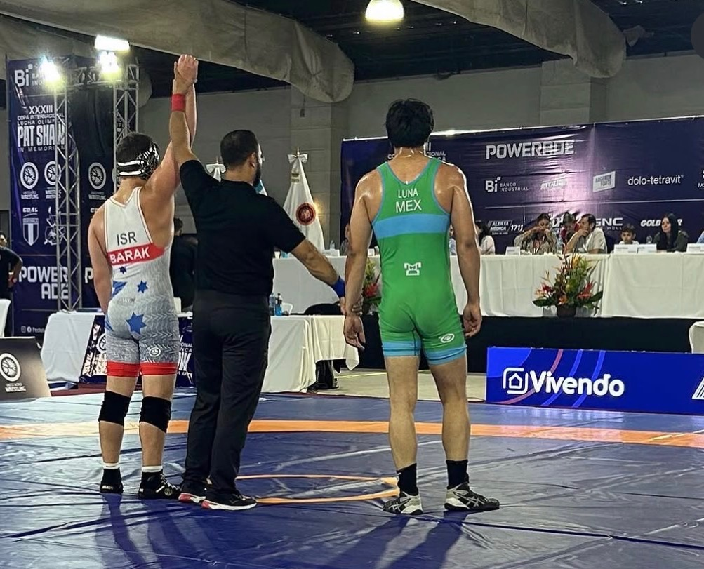
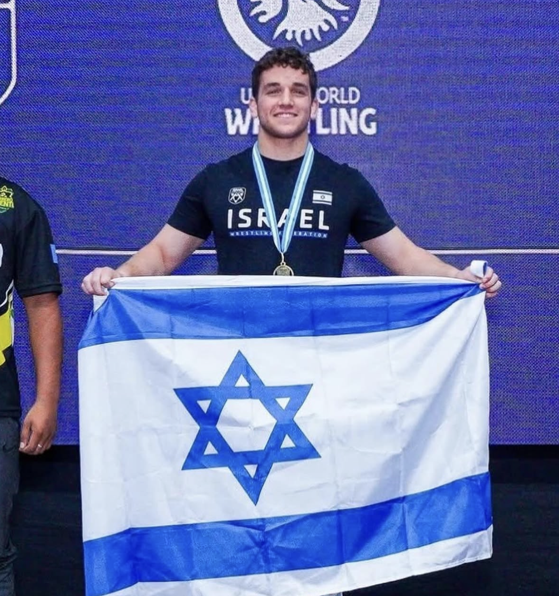
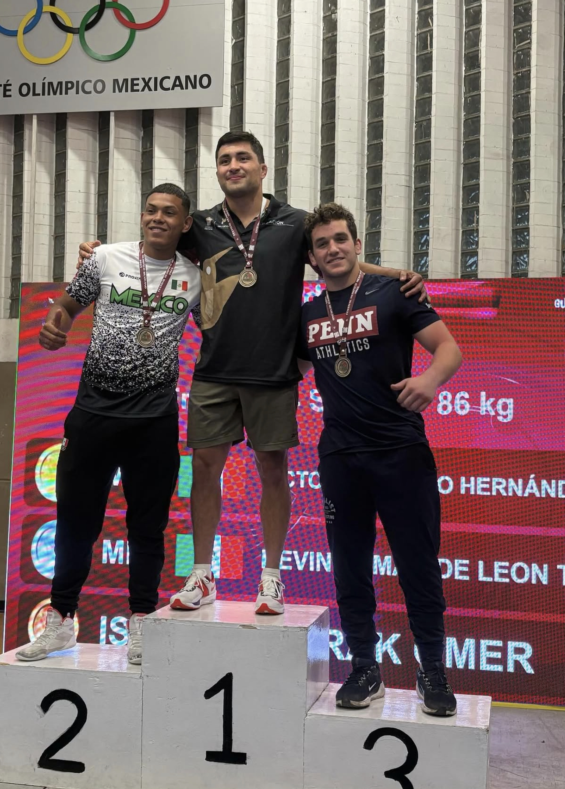
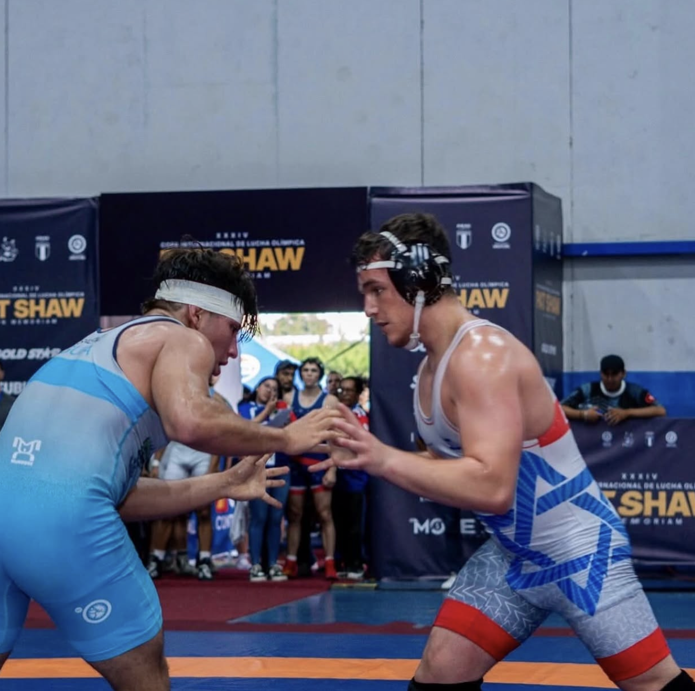
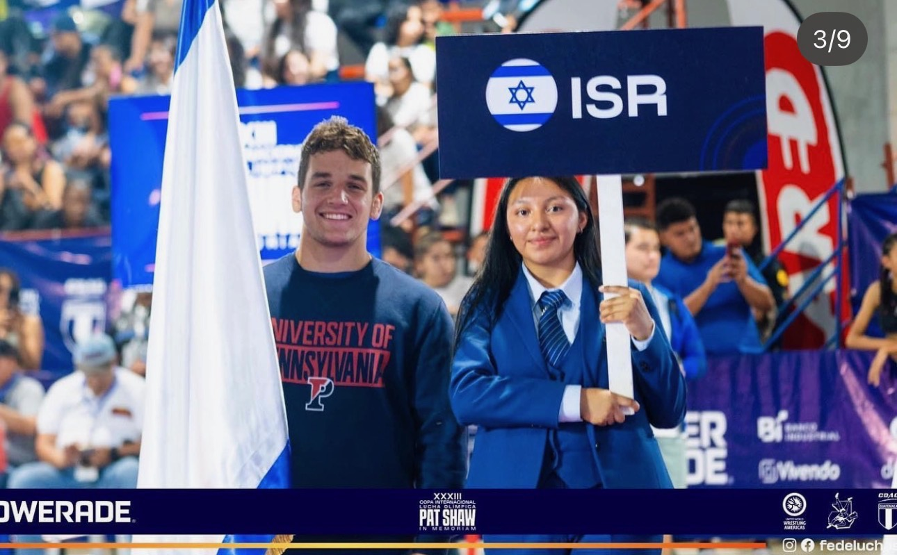
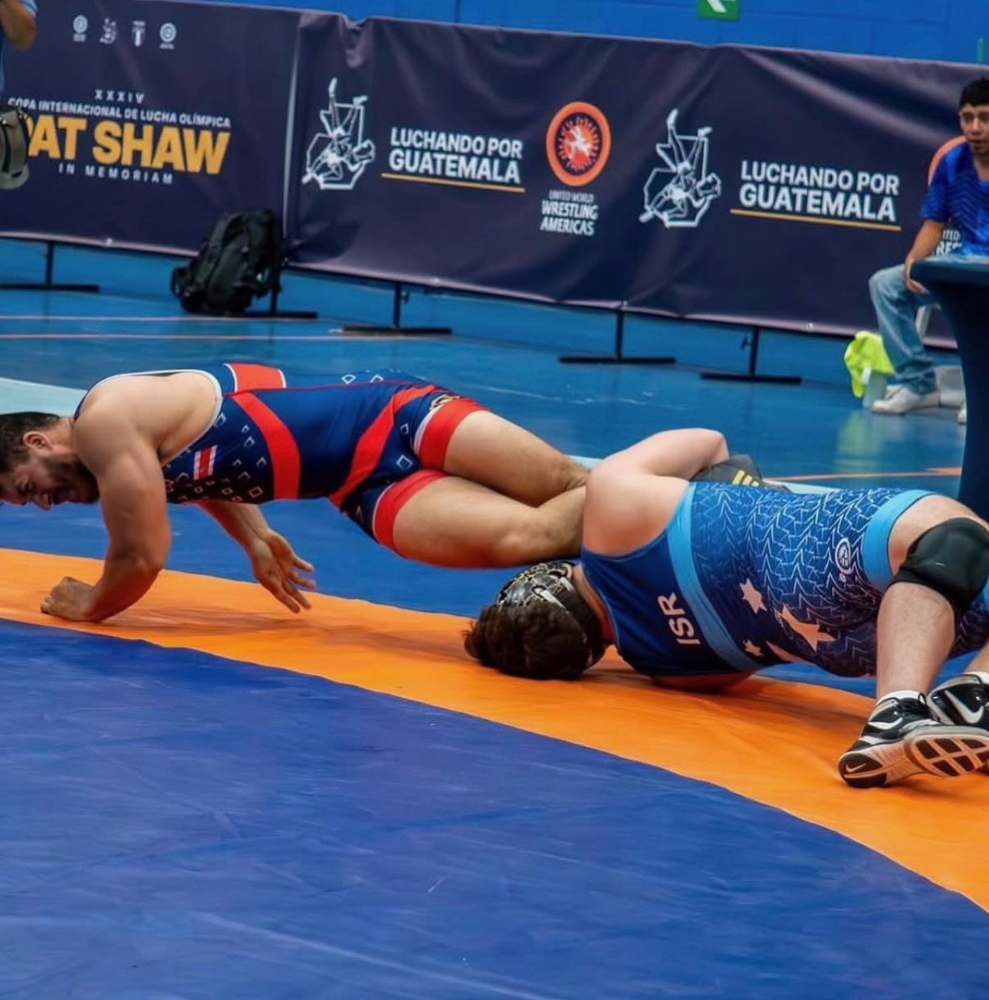

יוני 2025 · מבט לאחור
עומר ברק (Omer Barak): ממזרני ההיאבקות בפלורידה לייצוג ישראל
אחרי שהחל את דרכו בג׳ודו ועבר להתאמן הרחק מהבית, עומר ברק הגיע לקבוצת ההיאבקות של פן וזכה במדליות בינלאומיות עבור ישראל.
{kind=link}

ביוני 2024, בגואטמלה סיטי, זכה עומר ברק (Omer Barak) במדליית זהב עבור ישראל. הוא סיים ראשון בטורניר פאט שו במשקל עד 86 ק״ג בסגנון חופשי לבוגרים. איגוד ההיאבקות האמריקאי כלל את שמו ברשימת הזוכים בדיווח שפרסם לאחר התחרות.
ההישג הגיע אחרי מעבר בין ענפי ספורט ובין מסגרות אימון. ברק החל את דרכו בג׳ודו ונכנס להיאבקות בתיכון. כדי להצטרף לתוכנית ההיאבקות של Lake Highland Prep בפלורידה, עבר להתגורר הרחק מהוריו. כתבה בעיתון בית הספר, שפורסמה במרץ 2024, תיארה את המעבר ואת השפעת הרקע שלו בג׳ודו על סגנון ההיאבקות שלו.
ברק ייחס באותה כתבה את התקדמותו למאמן מייק פלאצו ולתרבות האימונים של הקבוצה. השגרה כללה נסיעות לתחרויות ושיעורי בית בדרכים. מבחינתו, ההשקעה באימונים ניכרה במה שקורה על המזרן.
{kind=link}

בהמשך הגיע לאוניברסיטת פנסילבניה והצטרף לסגל ההיאבקות שלה. הביוגרפיה הרשמית שלו באתר פן מפרטת מאזן של 223 ניצחונות ו־38 הפסדים בתקופת התיכון, חמש זכיות בתואר All-American ושתי הופעות בגמר ארצי. אלה הישגים מתקופת התיכון.
לצד המסגרת האמריקאית, ברק התחרה עבור ישראל בזירה הבינלאומית. ב־2024 השתתף באליפות אירופה עד גיל 20 בסגנון חופשי ובסגנון יווני־רומי. ב־2025 חזר לטורניר פאט שו, ורישומי איגוד ההיאבקות העולמי מתעדים זהב במשקל עד 87 ק״ג בסגנון יווני־רומי ובמשקל עד 92 ק״ג בסגנון חופשי לבוגרים.
ברק מופיע כיום בסגל ההיאבקות של פן. הפרופיל האוניברסיטאי ותוצאות התחרויות מתעדים את שני חלקי דרכו בענף: האימונים במסגרת האמריקאית והייצוג של ישראל בתחרויות בינלאומיות.
{kind=link}

{kind=link}

{kind=link}

{kind=link}

{kind=link}

{kind=link}
